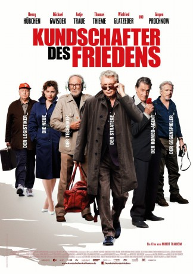

#6516 Kundschafter des Friedens
 gesehen am 10.08.2017
gesehen am 10.08.2017
 
 IMDB-Wertung: 5.8 / 10
IMDB-Wertung: 5.8 / 10  Metascore: 0
Metascore: 0 
Siebenundzwanzig Jahre nach dem Mauerfall ist der Alltag des einst legendären Top-Spions der DDR-Auslandsaufklärung, Jochen Falk (Henry Hübchen), ziemlich eintönig geworden. Doch da bittet der ehemalige Erzfeind BND überraschend um seine Hilfe. Falk wittert die Chance, eine offene Rechnung mit dem West-Agenten Kern (Jürgen Prochnow) zu begleichen und stimmt dem Einsatz zu.
Jahr: 2017
Dauer: 92 Minuten
FSK: 12
Land: Deutschland Studio: Majestic FilmverleihTonspuren:
Untertitel:
Auflösung: 1080p (1920x808) Größe: 4567 MB
Genre: Action, Thriller, Komödie
Regisseur: Robert Thalheim
Drehbuch: Robert Thalheim
Soundtrack:
Darsteller:
Datei: X:\2017(G-M)\Kundschafter des Friedens (2017, FSK12, 1920x808).mkv seit 05.07.2017
Festplatte: HD 2017(A-Z)-2018(A-F)
 Es gibt insgesamt 148 Filme in der Gruppe '2017(G-M)'
Es gibt insgesamt 148 Filme in der Gruppe '2017(G-M)'